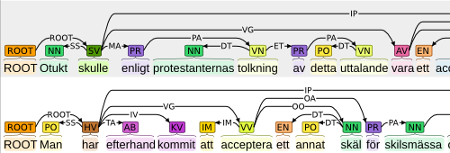

case studies and compatible annotation tasks
brat has been applied in a number real-world annotation projects and is applicable to a great variety of annotation tasks. This page showcases a number of tasks of both of these categories.
projects using brat
brat has been used in annotation efforts throughout its development, and has by version 1.0 already been used to mark tens of thousands of individual annotations in thousands of documents comprising hundreds of thousands of words.
Some annotation projects that have used (or are currently using) brat are introduced in the following.

Event annotation for cancer biology
[REDACTED] are using brat in [REDACTED] for structured event annotation for scientific manuscript abstracts in cancer domains.
The task involves a large number of types of both physical entities (genes/proteins, chemicals, cell, tissues, pathological formations etc.), molecular level events, and biological processes (gene expression, binding, development, regulation etc.). To assist in the annotation, brat rapid annotation mode is used to suggest likely types to annotators.

Japanese verb frame annotation
brat is used by the [REDACTED] project for verb frame annotation in FrameNet-like representation.
The annotation involves identifying the core and peripheral arguments of specific verbs in sentence scope and marking up their roles.
To assist in the visualization and annotation of Japanese text, brat integrates the MeCab Japanese word segmentation tool to split the text into tokens and sentences in order to increase the level of read-ability even for languages that lack explicit word segmentation markers.
{kind=link}
Gene-mutation-phenotype relations
[REDACTED] are using brat for the annotation of entities and their relations in full-text scientific publications to capture the associations of specific genes, mutations, and phenotype characteristics.
The annotation involves 12 entity mention types (gene, disease, mutation, characteristic, etc.) and binary relations between them.
Consolidation of biomedical information extraction resources
[REDACTED] are using brat for the visualization and consolidation of publicly available resources for a large variety of biomedical information extraction tasks.
The effort has so far converted over 20 corpora with annotation for a wide range of entity recognition, relation detection, and event extraction targets.
The various corpora include annotation for entities such as genes/proteins, chemicals, drugs, diseases, treatments, and anatomical locations; relations such as treatment-disease, protein-protein binding and drug-drug interaction; and events such as gene expression, phosphorylation and localization.
annotation tasks compatible with brat
A variety of annotation tasks that could be performed in brat are introduced below using examples from annotated corpora.
The examples discussed in this section have been originally created in various tools other than brat and converted into brat format. Converters for many of the original formats are distributed with brat.
In the selection of examples included here, priotity has been given to tasks with freely available data. (For example, although any CoNLL shared task dataset could be visualized in brat, we have only selected freely available subsets of those datasets that do not require a separate licence.)
Entity mention detection
{kind=link}
Example: CoNLL 2002 Shared Task: Language-Independent Named Entity Recognition
The Conference on Computational Natural Language Learning (CoNLL) 2002 shared task on Language-Independent Named Entity Recognition provided two annotated corpora (Spanish and Dutch) annotated with entities of four types (person, organization, location and miscellaneous).
A conversion script from the CoNLL 2002 shared task format into the brat standoff format and a sample of the corpus annotations are distributed with brat.
The full shared task data are freely available from the shared task website.
Event extraction
{kind=link}
Example: BioNLP shared task: biomedical event extraction
BioNLP shared task events held in 2009 and 2011 have included four different event extraction tasks.
The brat standoff format is compatible with the data distribution format of the BioNLP shared task, and samples of the annotations of the various corpora provided for the task are distributed with brat.
The full shared task data are freely available from the shared task website.
Coreference resolution

Example: CO supporting task: coreference in scientific publications
The BioNLP shared task 2011 included a supporting task on coreference in scientific publications.
The brat standoff format is compatible with the representation used in the coreference task, and samples of the annotations of the corpus provided for the task are distributed with brat.
The full shared task data are freely available from the shared task website.
Chunking
Chunking is the task of dividing text into non-overlapping segments that are typically further assigned labels such as NP (Noun Phrase).
{kind=link}
Example: CoNLL 2000 Shared Task: Chunking
The Conference on Computational Natural Language Learning 2000 (CoNLL 2000) shared task on chunking provides freely available training and test data.
A conversion script from the CoNLL 2000 shared task format into the brat standoff format and a sample of the corpus annotations are distributed with brat.
The full shared task data are freely available from the shared task website.
Dependency syntax
Dependency parsing (syntactic analysis) is the task of assigning binary relations between words to mark their head-dependent relations.
{kind=link}
Example: CoNLL-X Shared Task: Multi-lingual Dependency Parsing
The Tenth Conference on Computational Natural Language Learning (CoNLL-X) shared task on Multi-lingual Dependency Parsing provided annotated corpora for 13 languages, four of which are freely availabe (for Danish, Dutch, Portuguese and Swedish).
A conversion script from the CoNLL-X shared task format into the brat standoff format and a sample of the corpus annotations for these four languages are distributed with brat.
The full shared task data are freely available from the shared task website.